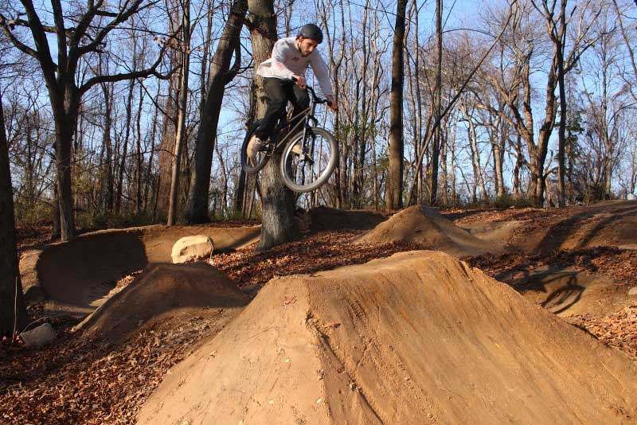
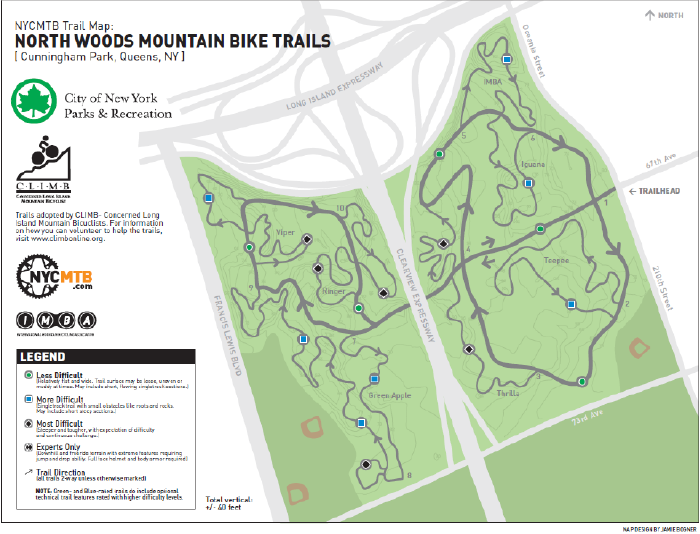

- Bike Type: Mountain
- Difficulty: 33% Noob, 33% Experienced, 33% Veteran
- Length: 6.5 miles
- Location: Fresh Meadows, Queens, NY
- Description: Cunningham has it all, for riders ranging from absolute beginners to skilled XC'ers in search of a challenge. Cunningham's trail run the gamut- tight and twisty, technical singletrack, technical rock features and log-overs galore, relative smooth and wide beginner trails (wide enough to pull a baby trailer behind your bike), fast and fun intermediate trails - the only thing it doesn’t have is significant climbing. The total elevation difference in the park is only 40 feet, making the trails perfect for singlespeeders, and the biggest climbs can be cleared with no more than 10 pedal strokes. But don't let that fool you, Cunningham provides a great workout with constant speed-ups and slow-downs, short and sharp power climbs, and some wide-open, full-speed fast trails. Some have claimed that the Cunningham trails are the most technical on Long Island, and whether you agree with that assessment or not, one thing is certain- Cunningham is fun for everything from a casual cruise with first-time mountain bikers to an all-out hammerfest with the racer crew.


❮
❯